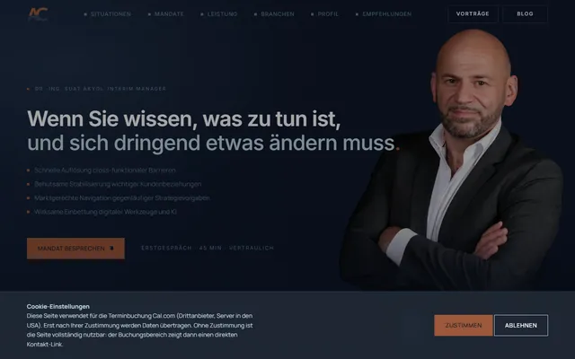
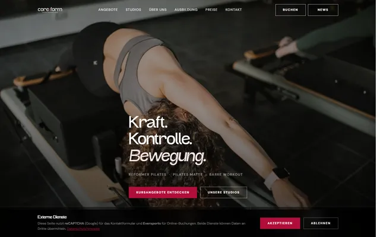
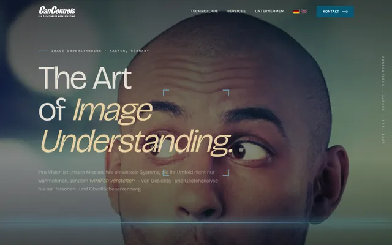
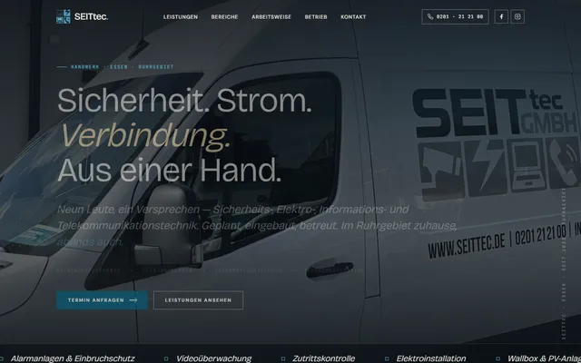
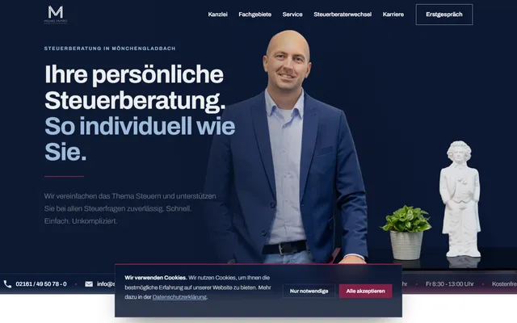
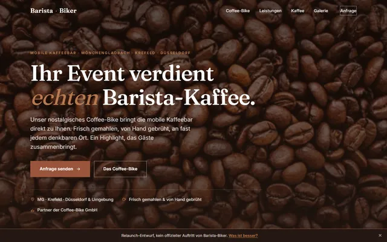

Gebaut im Gespräch, in gut einer Stunde, von einem KI-Team unter der Leitung von Dr.-Ing. Suat Akyol. Hier steht, was neu ist, was gemessen wurde und was für den Live-Betrieb noch fehlt.
Dieser Entwurf ist kein offizieller Auftritt von Oliver Merkle und für Suchmaschinen gesperrt. Er nutzt ausschließlich die öffentlich verfügbaren Inhalte und Bilder von olivermerkle.com, hat keine Verbindung zum offiziellen Auftritt und konkurriert nicht mit dem Original. Auf Wunsch wird er jederzeit entfernt.
Die Startseite ist 1:1 übernommen, auf Wunsch als eine Seite, nur auf Deutsch, mit den Stimmen in vollem Namen.
| Merkmal | Bisherige Seite | Dieser Entwurf |
|---|---|---|
| Technik | WordPress mit Astra-Theme und Plugins | Schlanke Einzelseite ohne Baukasten |
| Erster Eindruck | Leitsätze und Text | Große Kernaussage, Foto, Rollen auf einen Blick |
| Handlungsführung | Kontakt am Seitenende | Gesprächs-Knopf im Kopf, in der Leistung und am Ende |
| Stimmen | Untereinander | Zum Wischen, mit Initialen-Marke |
| Auffindbar für KI-Suche | Nur WebPage, Kopfzeile, CreativeWork | Person, Leistungen, Kontakt, DDIM-Mitgliedschaft |
| Ladezeit am Handy | 9,9 s bis zum ersten Inhalt | 0,8 s bis zum ersten Inhalt |
PageSpeed Insights am Handy und der Schema Markup Validator, beide am 16.10.2026 auf beiden Seiten gemessen.
Die bisherige Seite ist ordentlich aufgestellt: Titel, Beschreibung, Vorschau und Sitemap sind vorhanden. Das bleibt so.
Wer bei ChatGPT oder Perplexity nach einem Interim Manager für Operational Excellence fragt, bekommt Antworten aus strukturierten Daten. Die fehlten bisher fast ganz.
Entscheider lesen unterwegs. Aus 10 Sekunden Warten wird knapp eine.
Farben und Schrift sind aus der bisherigen Seite übernommen, nur in Rollen geordnet: Weiß und helles Grau tragen den Text, Navy gibt Gewicht, Orange zeigt, wo es weitergeht.
Eine klare Schrift ohne Füßchen, die schon heute Ihre Seite trägt. Sie wirkt sachlich und bleibt in großen Überschriften kraftvoll.
Keine Überraschungen. Fest heißt fest.
Weder anonyme Großagentur mit langen Wegen noch Gelegenheitsanbieter: ein Ansprechpartner, alles aus einer Hand.
Formular, CMS, News oder KI-Assistent lassen sich ergänzen, von kostenfrei bis zu einer kleinen Monatsgebühr.
Volle Nutzungsrechte, kein Abo-Zwang, kein Nachverkauf durch die Hintertür.






Was ist das hier? Ein Redesign-Entwurf von Dr.-Ing. Suat Akyol, Inhalte und Bilder aus dem Bestand. Anmerkungen gern an contact@akyol.de.